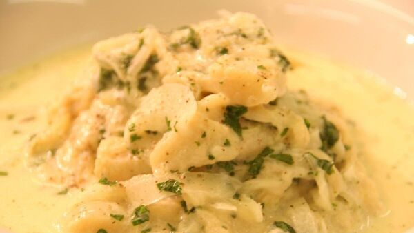

Tripe and onion

A dish that reminds me of home.
Ingredients
- 450g tripe
- 1 small onion, peeled and sliced
- salt and freshly ground pepper
- cold milk - sufficient to cover
- 50g roux
Method
STEP 1
Put the tripe into a saucepan with a quarter cupful of water,
with the lid on, place on the hob for 8-10 minutes approx.
STEP 2
Discard the liquor in the pot, add the sliced onion and cover with cold milk.
Simmer gently for 1 hour approx. until the tripe is tender.
STEP 3
Strain off the milk, thicken with roux, season with salt and pepper.
Pour the milk back into the saucepan with the tripe, heat through.
Check seasoning, it will take quite a bit of pepper.
Serve on a slice of buttered white bread.
STEP 4
Enjoy!
HOME